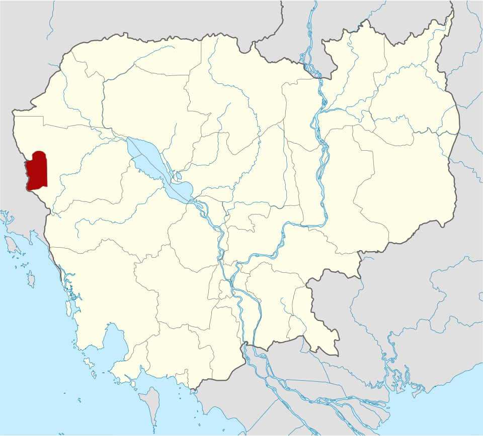
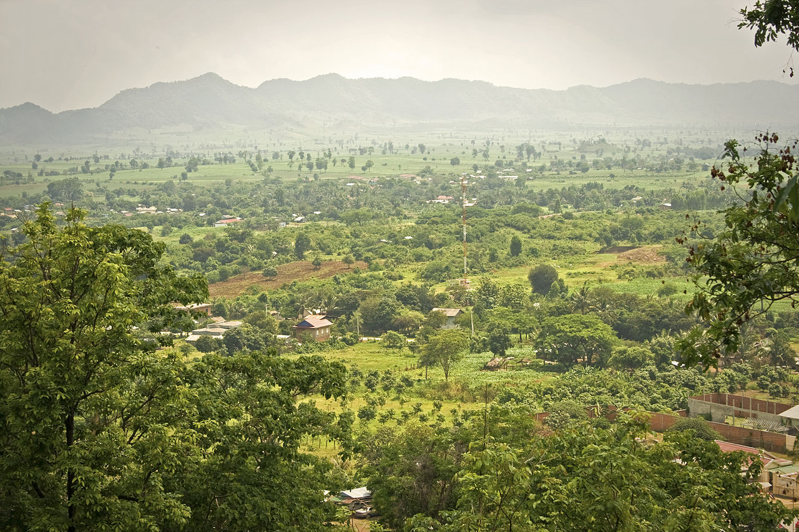
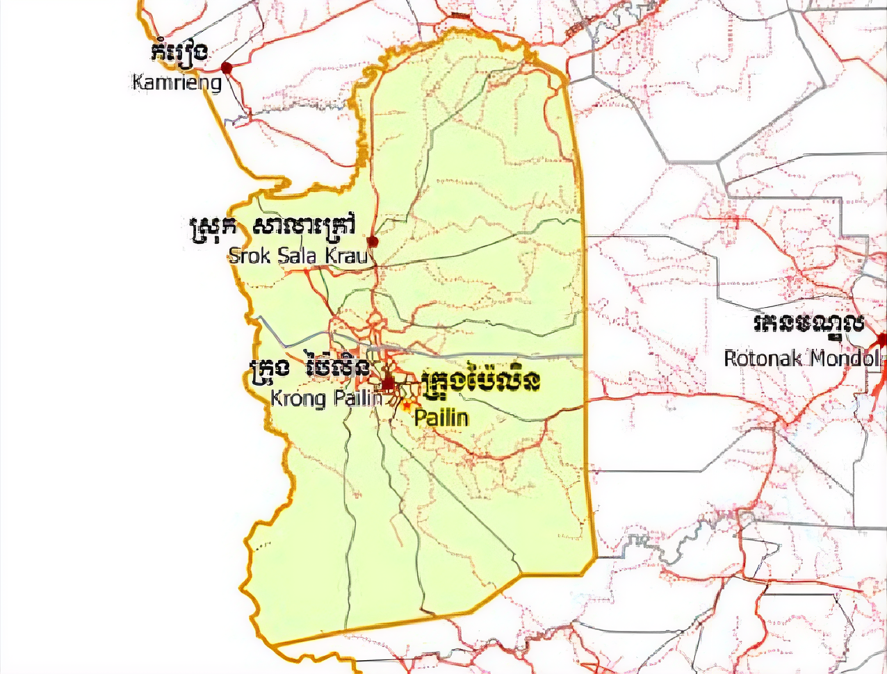

Pailin
← ត្រឡប់ទៅផែនទីប៉ៃលិន ជាខេត្តមួយឋិតនៅជ្រុងខាងជើងនៃជួរភ្នំក្រវាញ ត្រូវជាភាគខាងលិចនៃព្រះរាជាណា ចក្រកម្ពុជា មានព្រំប្រទល់ជាប់ជាមួយប្រទេសថៃ។ ខេត្តនេះព័ទ្ធជុំវិញដោយខេត្តបាត់ដំបង និង ត្រូវបានផ្ដាច់ចេញពីខេត្តបាត់ដំបង ឱ្យក្លាយជាតំបន់រដ្ឋបាលដាច់ដោយឡែក បន្ទាប់ពីការចុះ ចូលរបស់ក្រុមលោកអៀង សារី នៅឆ្នាំ ១៩៩៦។ ប៉ៃលិនត្រូវបានពិភពលោកស្គាល់ថា ជាជម្រកចុងក្រោ យនៃពួកខ្មែរក្រហម ដែលឋិតនៅក្រោមការគ្រប់គ្រងរបស់ពួកគេ បន្ទាប់ពីបានចាញ់សង្គ្រាម នៅឆ្នាំ ១ ៩៧៩ និង ដើរតួជា រដ្ឋធានីនៃ រដ្ឋាភិបាលបណ្ដោះអាសន្ននៃការរួបរួមជាតិ និង សង្គ្រោះជាតិកម្ពុជា ។ ខេត្តនេះគឺជាខេត្តដែលស្ថិតនៅក្រោមអាណាចក្រខ្មែរដ៏មានឥទ្ធិពល ប៉ៃលិនត្រូវបានដណ្តើម កាន់កាប់នៅឆ្នាំ១៥៥៨ ដោយពួកកងទ័ពភូមា ហើយក្រោយមកបានគ្រប់គ្រងដោយសៀម រហូតដល់ឆ្នាំ១៩០៧ និងម្តងទៀតពីឆ្នាំ១៩៤១ ដល់១៩៤៦ (កម្ពុជាក្រោមការត្រួតត្រារបស់ជប៉ុន) នៅពេលដែលខេត្តប៉ៃលិនត្រូវបានប្រគល់មកអោយកម្ពុជាវិញ។ នៅថ្ងៃទី ២២ ធ្នូ ២០០៨ ព្រះបាទនរោត្តម សីហមុនី បានចុះព្រះហស្ថលេខា លើរាជក្រឹត្យមួយ ដើម្បីផ្លាស់ប្ដូរ ក្រុងកែប ក្រុង ប៉ៃលិន និង ក្រុងព្រះសីហនុ ឱ្យទៅជាខេត្ត ព្រមទាំងកែតម្រូវព្រំប្រទល់ខេត្តផ្សេងៗទៀតផងដែរ។[២ ] ប្រជាជននៅទីនោះភាគច្រើនជាកសិករ មានដាំដំណាំ ជាច្រើន ប្រភេទដូចជា ពោត ដំឡូង ។ដំ ណាំដែលទទួលផលល្អ ជាងគេ ហើយនាំចេញច្រើនគឺ ពោត។ ទន្ទឹមនឹងដំណាំទាំងនេះ មានដាំផ្លែឈើ ហូបផ្លែ មាន ដូចជា ស្វាយ ចេក សាវម៉ាវ ធុរ៉េន មង្ឃុត ជាពិសេស គឺ ក្ងែន ជាផ្លែឈើមួយប្រភេទ ដែលដុះនៅតែតំបន់ ប៉ៃលិន ហើយក៏មានការដាំបន្តហើយនៅតាមបណ្ដា ខេត្តនានា។ ក្ងែន មិនខុសពី មៀនទេ ប៉ុន្តែវាមិនផ្អែមដូចមៀនទេ ហើយវាមានសាច់ច្រើនជាងមៀន។ ការរស់នៅរបស់ប្រជាជនគឺ ពួកគេចេះស្រឡាញ់គ្នាទៅវិញទៅមក ហើយបើមានកម្មវិធី បុណ្យទានផ្សេងៗ គេជួយគ្នាទៅវិញទៅមក ប្រកបដោយការយោគយល់។

វប្បធម៌របស់ប៉ៃលិនគឺខុសគ្នាយ៉ាងច្បាស់ពីវប្បធម៌ខ្មែរភាគច្រើន។ យោងតាមទិន្នន័យមួយចំនួន វប្បធម៌របស់ប៉ៃលិនភាគច្រើនជាជនជាតិភូមា ហើយមានចំណុចស្រដៀងគ្នាច្រើនជាមួយវប្បធម៌នៃប្រទេសភូមា។ ភាពស្និទ្ធស្នាលនេះត្រូវបានបង្ហាញនៅក្នុងម្ហូបអាហារ សម្លៀកបំពាក់ ស្ថាបត្យកម្មប្រាសាទ ពិធីបុណ្យ និងសិល្បៈនៅក្នុងតំបន់។ វប្បធម៌នេះអាចត្រូវបានគេមើលឃើញថាស្រដៀងគ្នាទៅនឹងវប្បធម៌នៅឈៀងម៉ៃ ប្រទេសថៃ។ ប្រជាជនប៉ៃលិនភាគច្រើនជាជនជាតិកូឡា។ ជនជាតិកូឡាដើមឡើយបានធ្វើចំណាកស្រុកពីប្រទេសភូមាតាំងពីឆ្នាំ 1876 (ចំណាំ៖ ប្រជាជនខ្មែរហៅជនជាតិភូមាថា "កូឡា" ឬ "ពូមៀ")។ រលកនៃជនអន្តោប្រវេសន៍មួយទៀតគឺជនជាតិសាន (ជនជាតិភាគតិចមួយក្នុងចំណោមជនជាតិភាគតិចជាច្រើននៅភូមា) បានមកដល់ពីប្រទេសភូមាក្នុងទសវត្សរ៍ឆ្នាំ 1920។ ជនជាតិ "កូឡា" ឬជនអន្តោប្រវេសន៍ភូមាមកពីប៉ៃលិនត្រូវបានគេស្គាល់ដោយសារការងាររបស់ពួកគេនៅក្នុងអាជីវកម្មត្បូងមានតម្លៃ ដែលទំនងជាអ្វីដែលទាក់ទាញពួកគេមកប៉ៃលិន។ ប៉ៃលិនគឺជាឈ្មោះដូចគ្នាទៅនឹងតំបន់មុកុកនៃប្រទេសភូមា ជាកន្លែងដែលត្បូងមានតម្លៃស្រដៀងគ្នានេះត្រូវបានជីកយករ៉ែ។ យោងតាមអ្នកធ្វើអាជីវកម្មត្បូង ត្បូងនៅប៉ៃលិនអាចប្រៀបធៀបទៅនឹងត្បូងមកពីតំបន់មុកកុកក្នុងប្រទេសភូមា។ ដូច្នេះ ប្រជាជនខ្មែរជឿថាជនជាតិកូឡា ឬជនអន្តោប្រវេសន៍មកពីប្រទេសភូមាមកពីតំបន់មុកកុកនៃប្រទេសភូមា។[៥] មានគ្រាមភាសាជាច្រើនដែលនិយាយក្នុងស្រុក រួមមានភាសាខ្មែរ សាន និងកូឡា។ គ្រាមភាសាខ្មែរក្នុងស្រុកបង្ហាញពីឥទ្ធិពលនៃសម្លេង និងការបញ្ចេញសំឡេងពីភាសាភូមា ក៏ដូចជាភាសាខាំមឿង និងភាសាមន។ នៅប៉ៃលិន មានអាហារប្រភេទផ្សេងៗគ្នាមួយចំនួន។ អាហាររបស់កូឡាក៏ខុសពីម្ហូបភូមាដែរ។ ម្ហូបបែបភូមាដ៏ពេញនិយមបំផុតគឺមីកូឡា (មីកូឡា) ដែលជាម្ហូបបួសដែលធ្វើពីមីស្តើងៗ ចំហុយ និងចម្អិនជាមួយទឹកស៊ីអ៊ីវ និងស្លឹកខ្ទឹម ជួនកាលលាយជាមួយសាច់ខ្លះ និងបង្កងតូចៗ។ ម្ហូបផ្សេងទៀតរួមមាន តុំយ៉ាំមកពីប្រទេសថៃ និងនំបញ្ចុកចេកមនរបស់ប្រទេសភូមា។ ម្ហូបទាំងនេះបានរីករាលដាលដល់តំបន់ផ្សេងទៀតនៃប្រទេសថៃ និងកម្ពុជា ប៉ុន្តែជាធម្មតាមានរសជាតិផ្អែមជាងម្ហូបប៉ៃលិន ជាពិសេសនៅភ្នំពេញ។


ខេត្តប៉ៃលិន មានស្រុកពីរ គឺ ៖
ទឹកធ្លាក់ ដាចំប៉ី» បាន និងកំពុងរង់ចាំស្វាគមន៍ ភ្ញៀវទេសចរយ៉ាងអន្ទះសារបំផុត នៅឯនាយខាងស្ដាំដៃ ហៀបនឹងទៅដល់ព្រំប្រទល់ដែន អន្តរជាតិអូរស្មាច់។ ភ្ញៀវអាចធ្វើដំណើរតាមរថយន្ដ ឬ ម៉ូតូឡើងភ្នំដោយឆ្លងកាត់វត្ដល្អាងតាថុង អែបរូបចម្លាក់អណ្ដើកធំ តម្រង់ទៅស្នាក់កា រប៉ុស្ដិ៍អង្គភាពនគរបាលទេសចរណ៍ដ៏ស្ងាត់ជ្រងំ រួចដើរថ្មើរជើងទៅខាងស្ដាំដៃ ប្រមាណ៣០ ០ម៉ែត្រទៀត លោកអ្នកនឹងឃើញទឹកធ្លាក់ រាយប៉ាយពីលើកំពូលភ្នំរហូតដល់ចង្កេះភ្នំ(ល្អាងតាថុង )។ពីចំណុចតូបលក់ដូរចំណី និងភេសជ្ជៈត្រជាក់ៗរបស់អ្នកស្រី វី រហូតឡើងដល់កំពូលភ្នំ ទឹកហូរបាចសា ចលើជម្រាលភ្នំថ្មជាច្រើនកន្លែងបន្ដរង់ចាំភ្ញៀវជាហូរហែ។ទីនេះមានទឹកហូរកម្ពស់ទាបតែប្រមាណ១ម៉ែត្រ និង ហូរច្រោះតាមរូងថ្មរាងជារង្វង់។ចំណុចទាបបំផុត ក្បែរតូបភេសជ្ជៈចម្ងាយប្រមាណ៥០ម៉ែត្រ ចុះតាមជ្រលងឡោមព័ ទ្ធ ដោយរុក្ខជាតិតូចធំឈរច្រូងច្រាងបន្ដជាម្លប់យ៉ាងត្រឈឹងត្រឈៃ។ទឹកធ្លាក់ខ្ពស់បំផុតជាង ៥ម៉ែត្ររំលេចទស្សនីយភាព ទាក់ទាញបំផុត។ជ្រលងទឹកធ្លាក់ជ្រកក្រោមម្លប់ឈើស៊ុបទ្រុបនេះ តែងតែទាក់ទាញទ័ពស្វាជាច្រើនរយក្បាល មករកផលានុផលបរិ ភោគប្រចាំរដូវមិនដាច់រយៈដល់ការវាតទីបំភ័យភ្ញៀវផងដែរ។អ្នកស្រី វី ជាអ្នកលក់ដូរក្បែរទីឋានទឹកធ្លាក់នោះជាង១០ឆ្នាំឲ្យដឹងថា៖ «ដល់រ ដូវមានផ្លែឈើព្រៃសម្បូរ ហ្វូងស្វារាប់រយក្បាលនឹងនាំគ្នាមកកាន់ទីនេះ ហើយប្រញាយគ្នាពាសពេញលើដើមឈើ និងដី។ ខ្ញុំភ័យណាស់ ហើយពួកវាមិ នខ្លាចមនុស្សទេ។ ទុករបស់ប្រហែសវានឹងអូសយកទៅហើយ»
រមណីយដ្ឋានអូរអែម ជាតំបន់រមណីយដ្ឋានចាស់ ដែលស្ថិតនៅក្នុងសង្កាត់អូរច្រារ ខ័ណ្ឌប៉ៃលិនមានចំងាយ១០គមពីក្រុងប៉ៃលិនហើយរមណីយដ្ឋាននេះជារមណីយដ្ឋានធម្មជាតិ។
រមណីយដ្ឋានទឹកធ្លាកអូរតាវ៉ៅឬទឹកធ្លាក់ភ្នំខៀវ ជារមណីយដ្ឋានទេសចរណ៍ធម្មជាតិដើម្បីទៅដល់ ទីនេះ ភ្ញៀវទេសចរត្រូវធ្វើដំណើរតាមផ្លូវជាតិលេខ៥៧ រហូតដល់ស្ពានថ្មអូរតាវ៉ៅឡើងទៅប្រហែលជាង ១០០ ម៉ែត្រក្នុងខេត្តប៉ៃលិននោះ និងឃើញផ្លាកសញ្ញាបង្ហាញទីតាំងត្រង់ម្ដុំផ្លូវបំបែកភូមិខ្លុង ពីខាងឆ្វេងដៃ ហើយបត់ចូលទៅប្រមាណ ៧ គីឡូម៉ែត្រទៀត និងដល់កន្លែងរមណីយដ្ឋានធម្មជាតិទឹកថ្លាក់ក្បាលអូរតាវ៉ៅហើយ។ រមណីយដ្ឋាននេះមានស្ទឹងធម្មជាតិទឹកថ្លា មានជ្រោះទឹក ហូរធ្លាក់លើល្បាក់ថ្មដា យ៉ាងខ្ពស់ ខ្យល់អាកាសត្រជាក់ដល់ក្រអៅបេះដូងដែលធ្វើឲ្យភ្ញៀវទេសចរណ៍ជាតិ និងអន្តរជាតិ ទៅ លេងសប្បាយរីករាយ។ ពិសេសនោះ គឺម្ចាស់វិនិយោគបានកែច្នៃខ្ចូសកន្លែងអង្គុយលេងនៅក្បែរមាត់ស្ទឹងអូរតាវ៉ៅជាច្រើន កន្លែង មានខ្ចូសអង្គុយនៅខាងលើច្រាំង និងខាងលើកន្លែងចតឡាន សម្រាប់ភ្ញៀវទេសចររង់ចាំក្រុមគ្រួសារចុះទៅលេ ងទឹកជ្រោះធ្លាក់បែកផ្កាត្រែង។ ចំណែកកន្លែងទុកដាក់ឡានម៉ូតូយ៉ាងស្រូលដែលមិនធ្វើឲ្យមានការព្រួយបារម្ភពីសុវត្ថភាពបាត់បង់អ្វីឡើយ។